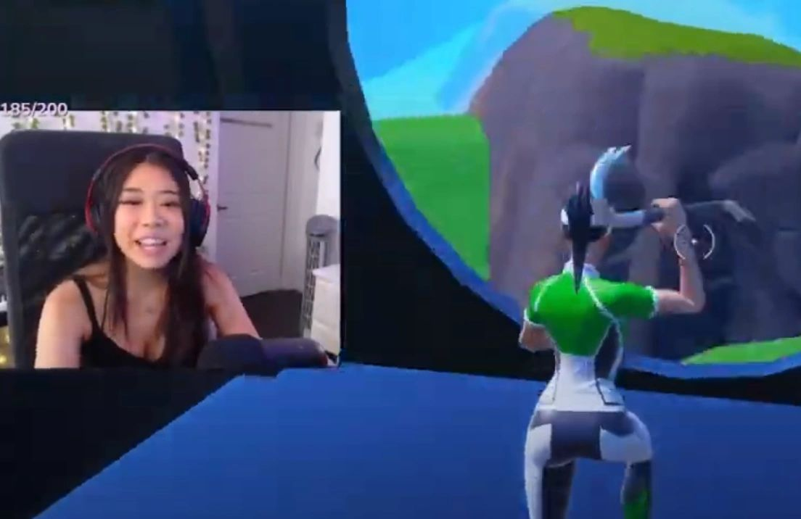

2025
Winter Wonderland 2025
Hosted by and in partnership with the Boys and Girls Club of Central Orange County, this event expands the organization’s reach into youth-centered community programming.
The original events page had all the right stories. The redesign turns them into a timeline with better hierarchy, visuals, and pacing so people can understand the breadth of your impact at a glance.

Hosted by and in partnership with the Boys and Girls Club of Central Orange County, this event expands the organization’s reach into youth-centered community programming.
To kick off 2024, members of the Code Red Los Angeles team organized a cleanup at Huntington Beach after being inspired by local environmental action. In 2.5 miles, the team removed more than 30 pounds of trash.
Members wrote letters for patients during Valentine’s Day 2021, Christmas 2023, and Valentine’s Day 2024, creating personal moments of support for children spending holidays in the hospital.
During 2024, Project Code Red logged more than 337 volunteer hours as an organization. Volunteer work ranged from holiday meal support for families to environmental cleanup and community-focused leadership initiatives.
Code Red Raids bring viewership and encouragement to aspiring streamers and creators by coordinating community support in real time, sometimes paired with donations that boost motivation and visibility.
Project Code Red ran charity streams in support of StackUp’s military charity campaigns, helping raise more than $500 directly for veterans and active duty service members and later hitting campaign goals again after nonprofit establishment.
The team volunteered with and fundraised for the American Red Cross, including participation in the Rescue Royale challenge for Hurricane Ian relief. Revenue and donations have also supported organizations like Children’s Hospital Los Angeles, UNICEF, Project HOPE, and others.

Through partnerships like Prime Formula Tutoring and SiNET Tutoring, the organization supports its members' educational goals. It also offers practical guidance around credit, retirement, entrepreneurship, and creator finances.